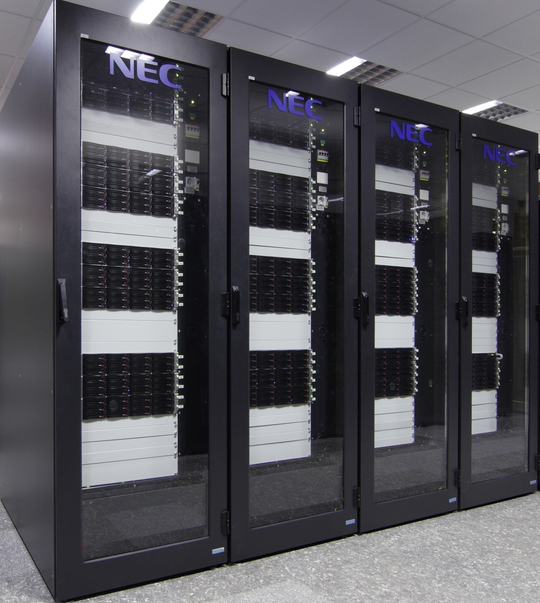

Computer Classification¶
Depending on the power, the size of the hardware and its function, we can classify computers in one of the following sections.
- Programmable controllers
They are small low-power computers, designed to intelligently control household appliances, elements of a car, etc. These controllers are what make it possible to carry out programs for a washing machine, digitally time a microwave oven, activate the ABS brake of a car, perform remote electrical consumption measurements, validate a transport card on the bus, turn on a light bulb via Wi-Fi connection, etc. control a vending machine, etc.
Specialized programmable controllers are used in industry to move machines automatically or to collect data and control industrial processes. These controllers are called PLC and SCADA.
As the prices of electronic components become cheaper, more and more devices incorporate small computers that add intelligence to them. These small controllers added to everyday objects and connected to the Internet is what is called the Internet of things or IoT.
One of the best-known controllers for home use and entertainment is the Arduino UNO board, with 8-bit architecture and 32 kbytes of program memory.
- Wearables
A wearable or wearable technology is a small computer incorporated into clothing. Includes smart watches or smartwatch, smart glasses, etc.
This technology can be used to monitor the health of users.
- Single Board Computer (SBC)
The single board computers are complete computers on a single small printed circuit board that includes a CPU, RAM, peripherals, connectors and other components typical of a computer.
One of the best known low-cost SBCs is the Raspberry Pi board. It is a personal microcomputer running Linux operating system and you just need to add a keyboard, mouse and monitor to have a working PC with it.
- SmartTV
They are small computers designed to add intelligence (smart) to a traditional television. They allow everything from decoding digital signals via satellite to adding capabilities such as connecting to the Internet and viewing streaming services such as Netflix, HBO or Amazon Prime.
Some of the best known are Google Chromecast, Amazon Fire TV and ` Apple TV <https://en.wikipedia.org/wiki/Apple_TV>`__,
Many current televisions (smartTV) already have built-in computers that allow these tasks to be carried out, as well as connecting to the manufacturing companies via the Internet. This has caused controversy because these televisions can record the conversations around them and send them to the manufacturer.
- Game consoles
The video consoles are computers designed to run video games. They can have relatively high potency.
Their use is limited solely to gaming, and the availability of many of these games is limited to a single platform, so many gamers prefer to use a high-end personal computer (PC) instead. The difference between the two types of computers lies in the price. For the same processing power, a PC can cost twice as much as an equivalent next-generation game console.
- Dedicated computers
There are more types of computers dedicated to performing a single function in a specialized way. They are more powerful computers than programmable controllers.
Examples of this type of computer are the NAS data servers that allow sharing data files on a network of computers, photocopiers, routers, ATMs, etc. .
- Smartphone
A smartphone or smartphone is a device that combines the functions of a mobile phone with those of a pocket computer.
They are currently the most commonly used computers for most people.
Its operating system is usually Android (from Google) or iOS (from Apple).
- Tablet
A tablet or tablet is a small computer based on a touch screen that generally works with the same operating systems as mobile phones (Android and iOS ).
In certain cases they can include peripherals such as a keyboard or mouse, although most of the time they are only handled through the touch screen.
There are smartphones that are larger than usual (greater than 6 inches diagonally) and are called phablets.
- Laptop
A portable computer is a personal computer (PC) capable of performing all the tasks of a desktop computer, but with a small size and battery included so it can be easily moved to be used anywhere.
Laptops Netbooks are computers designed to connect to the Internet and have fewer capacities than a regular laptop. They usually carry a lightweight Linux-based operating system and have a low price. The best-known models are the Chromebook from Google.
- Desktop personal computer
A personal computer or PC is usually referred to as a desktop microcomputer, for general use, to be used by one person. Current personal computers began to be sold in 1981 by IBM, although similarly functioning computers (clones) manufactured by other companies soon appeared.
Their operating system is usually Windows, MacOS, or Linux.
High-performance personal computers are also called workstation. They have much more computing power and storage capacity than a typical personal computer.

Image by OpenClipart-Vectors en Pixabay¶
- Mainframe
A mainframe or central unit is a computer used mainly by large organizations for critical applications that require highly reliable computers with large storage capacity.
These computers are used to carry out banking operations, censuses, Internet servers, etc.
- Computer cluster
A computer cluster is a large computer made up of a set of computers linked together by a high-speed network and synchronized by a system operating system, which is usually Linux, so that they behave as a single computer.
Currently this type of computer is slowly replacing mainframes in their functions.
Hindermath, CC BY-SA 3.0, via Wikimedia Commons.¶
- Supercomputer
A supercomputer is a computer used to perform large calculations such as weather forecasting, genome research, new medicines, etc. They handle large amounts of data by performing a large number of calculations per second (up to 16 trillion operations per second by 2022)
Initially, mainframes dedicated to intensive computing were used, but today they are based on computer cluster technology.
In Spain, the most famous supercomputer is the MareNostrum, made up of a cluster of 48,896 Intel Xeon processors.

MareNostrum 4 supercomputer at the Barcelona supercomputing center.¶
Vcarceler, CC BY-SA 4.0, via Wikimedia Commons.


{kind=link}
{kind=link}
{kind=link}
{kind=link}
{kind=link}
{kind=link}